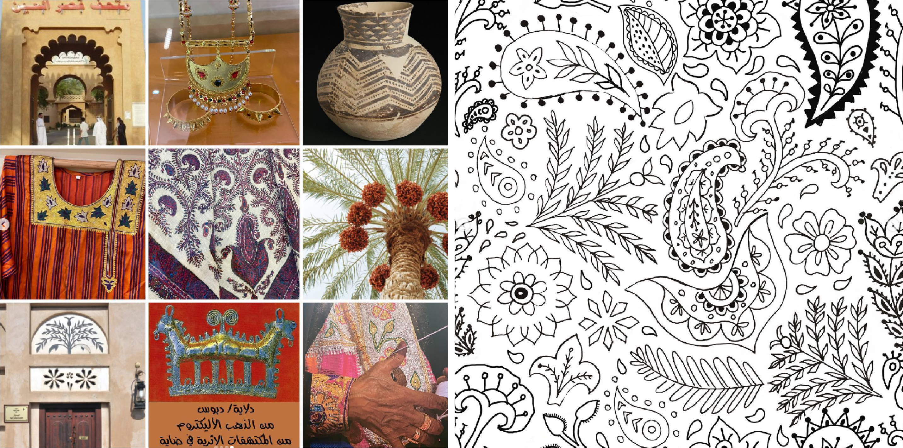
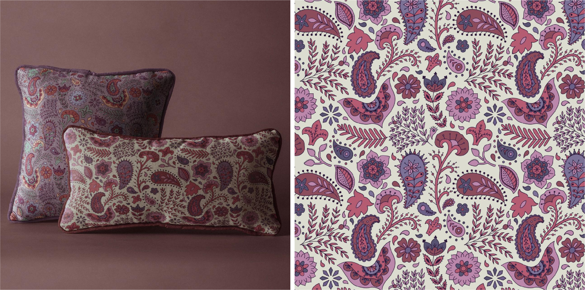

Недавно я устраивала в сторис вопрос-ответ по Upwork. Многие интересовались историей моего первого заказа там. Не скрою, что начинать было непросто — получить первый заказ.
Шла вторая неделя как я зарегистрировала там аккаунт фрилансера. Я отправляла свои первые отклики (proposals) и тратила без конца заканчивающиеся коннекты.
Коннекты — это такая валюта у фрилансеров, чтобы откликаться на вакансии. Какое-то их количество выдаётся сайтом один раз в месяц бесплатно, а если требуется больше, то их придётся покупать.
Каждая вакансия «стоит» разное количество коннектов — от одного до шести или даже восьми. Чем выше репутация у клиента, тем дороже будет стоить отправить ему свою заявку.
Помимо коннектов есть такая сложность, что заказчики могут выставлять свои требования к кандидатам: например, чтобы у вас был уровень английского как у носителя, чтобы вы территориально находились в США или чтобы ваш рейтинг был выше 90%.
Но самое неприятное для новичков, когда там в ограничениях стоит заработанная сумма: например, чтобы у вас было не ниже 10K$. Хотя по всем остальным пунктам вы можете проходить, но если у вас нет истории заказов и заработанных денег, то с вами могут не захотеть работать.
Всё как в жизни — когда хотят молодых специалистов-выпускников с огромным опытом работы.
Но не все заказчики так заморачиваются и выставляют жёсткие требования. Мой первый заказчик, видимо, оказался именно таким.
И на 14-й день моих стараний и безрезультатных заявок мне, наконец, первый раз ответили. Чтоооо? Там есть обратные сообщения! Ого, неужели ))
Может, я что-то делала не так, но я люблю сама проходиться по всем граблям и не смотрела на тот момент никаких обучающих видео, не читала статей и рекомендаций. Может, поэтому у меня поиск первого заказа занял столько времени и сил. Но что поделать, не люблю я теорию и всегда сама хочу пробурить свою дорожку.
Когда в пустоту отправляешь по 100 заявок, то когда тебе впервые отвечают, кажется чем-то невероятным. И готов уже на любые условия. Вот это, кстати, моя большая ошибка и ошибка многих новичков: не повторяйте её, цените себя и не хватайтесь за всё подряд.
Но я человек, видимо, азартный или одержимый. Мне очень хотелось добиться результата там, и я с готовностью принялась за этот заказ.
Нужно было сделать эксклюзивный паттерн в восточном стиле. Бюджет был низкий на довольно детализированный паттерн. Обычно я за такую цену уже готовые паттерны со стоков продаю, а эксклюзивный, новый стоит дороже.
На мою попытку приподнять цену заказчик сказал, что у него уже есть на примете ещё один исполнитель, готовый на эту цену, и если меня не устраивает бюджет, то он с другим фрилансером продолжит.
Кстати, это очень частая песня. Когда со мной стали повторять такое, я уже сразу отказывалась. И вы не ведитесь на такое: лучше, когда с самого начала взаимоотношений заказчик к вам относится уважительно и ценит ваши творческие усилия.
Случись такой разговор вне этой площадки — я бы отказалась сразу и точно.
Но две недели моих ежедневных и многочасовых поисков — это тоже как полноценная работа, только неоплачиваемая. Это удержало меня отказываться, и я сама впряглась. Решила, что первый заказ и первый отзыв того стоят.
К счастью, заказчик оказался душкой, подготовил подробный mood board — подборку картинок, которые передают настроение, атмосферу, стиль и колористику желаемого паттерна.

Он был всё время на связи, что немаловажно для быстрого завершения проекта, и принял всю работу с первого раза. И сразу же оставил отличный отзыв с пятью звёздами.

Так что первый опыт получился удачным, не считая заниженной стоимости.